Upgrade Cost Analysis¶
This chapter introduces the workflow for conducting upgrade cost analysis by using DISCO commands step by step or DISCO pipeline, where the pipeline chains the individual steps and runs upgrade cost analysis seamlessly. In the following two sections we will introduce the two methods separately.
There is a third method that bypasses the normal DISCO processes. This generic workflow allows you to run the upgrade simulations on existing, non-standardized OpenDSS models without any transformations.
The following commands run with default options. If you need any customization, please run --help on
the commands to see the available options.
Step-by-Step Workflow¶
1. Transform Model
Prepare the model with PV deployments by using DISCO model transformation.
$ disco transform-model tests/data/smart-ds/substations upgrade -o upgrade-models
Load shape profiles for Load elements are not used by the upgrade module, and so we recommend that
you remove them from the models in order to speed-up the simulations. Do so with this option:
$ disco transform-model tests/data/smart-ds/substations upgrade --exclude-load-profile -o upgrade-models
2. Create Config
With the transformed model, create the config.json file with submittable jobs.
$ disco config upgrade upgrade-models
DISCO will use default upgrade parameters if the option --params-file is not specified.
If --params-file is specified, that file must contain all required parameters.
Here are optional parameters that you can customize in the same file:
[thermal_upgrade_params]
parallel_transformers_limit = 4
parallel_lines_limit = 4
upgrade_iteration_threshold = 5
timepoint_multipliers = {}
[voltage_upgrade_params]
capacitor_sweep_voltage_gap = 1.0
reg_control_bands = [1, 2]
reg_v_delta = 0.5
max_regulators = 4
place_new_regulators = true
use_ltc_placement = true
timepoint_multipliers = {}
capacitor_action_flag = true
existing_regulator_sweep_action = true
3. Submit Jobs
Submit jobs by using JADE and conduct upgrade cost analysis within each job.
This command assumes that you are running on a local system. Please remove the option
--local if you run on an HPC.
$ jade submit-jobs config.json --local
This step will generate the directory output, which contains all upgrade results.
4. Upgrade Analysis
Run post-processing to aggregate upgrade cost analysis results and create analysis CSV tables.
$ disco-internal make-upgrade-tables output
If everything succeeds, it produces aggregated json file: upgrade_summary.json
Pipeline Workflow¶
1. Create Template
Create a DISCO pipeline template file. By default, the output file is pipeline-template.toml.
$ disco create-pipeline template --task-name UpgradeTask --simulation-type upgrade --upgrade-analysis ~/Workspace/disco/tests/data/smart-ds/substations
Here, we need to enable the --upgrade-analysis option.
2. Config Pipeline
Update the pipeline template file for customization if needed. Then create the pipeline config file
pipeline.json with this command.
$ disco create-pipeline config pipeline-template.toml
3. Submit Pipeline
Submit the pipeline with JADE
$ jade pipeline submit pipeline.json
If everything succeeds, it produces same aggregated upgrade tables in output-stage1.
Generic Workflow¶
Let’s assume that you have multiple networks defined in OpenDSS model files where each network has
its own Master.dss.
./custom_models/model1/Master.dss./custom_models/model2/Master.dss
Single Execution Mode¶
1. Configure the simulation parameters and in an input JSON file called upgrades.json.
Refer to this
file
as an example. The JSON schemas are defined in Upgrade Cost Analysis JSON Schemas.
Each job represents one OpenDSS network and one upgrade simulation.
Run the simulation.
$ disco upgrade-cost-analysis run upgrades.json
Refer to disco upgrade-cost-analysis run --help for additional options.
Parallel Execution Mode through JADE¶
Configure
upgrades.jsonas described in the previous step.Create the JADE configuration file.
$ disco upgrade-cost-analysis config upgrades.json
Modify the generated
config.jsonif necessary.Run the jobs through JADE. This will aggregate results across all jobs. This example assumes local-mode execution.
jade submit-jobs --local config.json
Technical Details¶
The automated upgrades module consists of three components as shown in the figure: it performs traditional infrastructure upgrades to resolve both thermal and voltage violations, and then computes the costs associated with each of those upgrades.
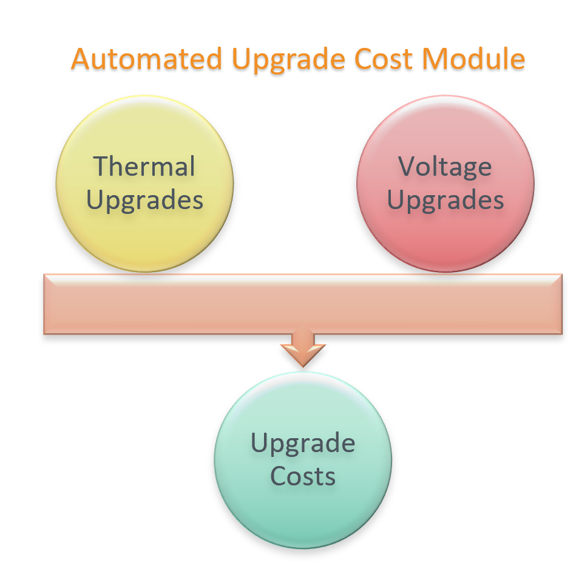{kind=link}
A high level overview of thermal and voltage upgrades considerations is shown below:
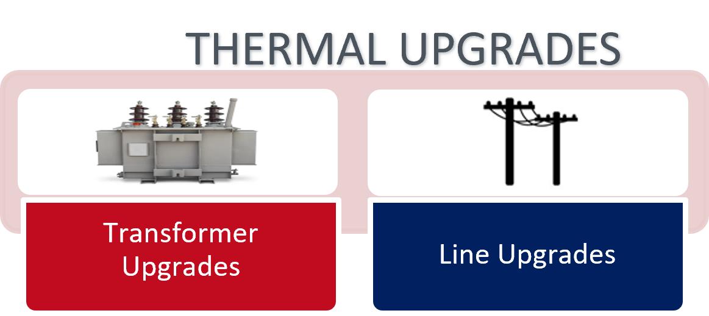 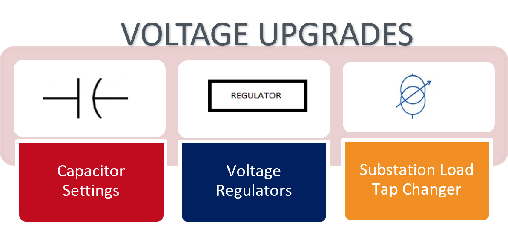{kind=link}
{kind=link}
1. Thermal Upgrades Workflow
In this sub-module, the thermal equipment (lines and transformers) violations are identified, and upgrades are determined as per the flowchart given below.

The technical equipment database is a catalog of available lines and transformers and can optionally be provided as an input. All the equipment in this database will be considered as available options while determining thermal upgrades. If this file is not provided, a technical database will be automatically generated from the given feeder model. This would provide the thermal upgrades module with a limited set of upgrade options. Refer to this sample technical equipment catalog for more information.
For an overloaded equipment, if a higher rated equipment of similar configuration is available in the technical catalog, that is considered as an upgrade and is chosen. Else, similar configuration equipment are added in parallel to resolve the observed violations. Sometimes, extreme thermal equipment overloaded can also cause voltage issues. So, it can be seen that thermal upgrades also resolve some undervoltage violations.
2. Voltage Upgrades Workflow
In this sub-module, the voltage violations present in the feeder are identified, and are resolved as shown in flowchart below:
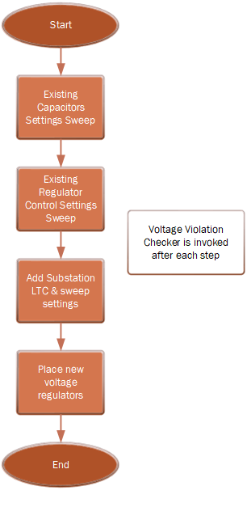{kind=link}
a. Existing Capacitors:
If capacitors are present
If capacitor control is present for a capacitor: correct capacitor control parameters i.e. PT ratio is checked and corrected (if needed)
If capacitor control is present, it is changed to voltage-controlled (if it is of any other kind)
If capacitor control is not present, voltage-controlled capacitor control is added and default control settings are applied to any newly added controller
A settings sweep is performed through all capacitor settings, and setting with least number of violations is chosen. If initial settings are best, no changes are made. In the capacitor settings sweep method, same settings are applied to all capacitors.
b. Existing Regulators:
If voltage regulators are present, regulator control parameters (like ptratio) are corrected (if needed), including for substation LTC.
- A settings sweep is performed for existing regulator control devices (excluding substation LTC).
In this settings sweep method, same settings are applied to all regulators
c. Add new Regulator:
A new regulator is added by clustering nearby buses with violations and testing regulator placement (one at a time) on each of the common upstream nodes. The placement option with least number of violations is chosen.
3. Upgrades Cost computation A unit cost database is used to determine the total costs associated thermal and voltage upgrades determined through the workflows described above. Sample input cost database can be found here
Input parameters¶
In order to run this simulation, the following inputs are needed. For required fields, example inputs are provided, and for optional parameters, default inputs are shown.
1. Thermal Upgrade Inputs
The input parameters for thermal upgrades are shown in table below. For required fields, example inputs are provided, and for optional parameters, default inputs are shown.
Input Parameter |
Type |
Description |
Required/Optional |
Default/Example |
|---|---|---|---|---|
transformer_upper_limit |
float |
Transformer upper limit in per unit |
Required |
1.25 |
line_upper_limit |
float |
Line upper limit in per unit |
Required |
1.25 |
line_design_pu |
float |
Line design in per unit |
Required |
0.75 |
transformer_design_pu |
float |
Transformer design in per unit |
Required |
0.75 |
voltage_upper_limit |
float |
Voltage upper limit in per unit |
Required |
1.05 |
voltage_lower_limit |
float |
Voltage lower limit in per unit |
Required |
0.95 |
read_external_catalog |
bool |
Flag to determine whether external catalog is to be used |
Required |
FALSE |
external_catalog |
str |
Location to external upgrades technical catalog json file. Can be empty string, if read_external_catalog is False |
Required |
“” |
create_plots |
bool |
Flag to enable or disable figure creation |
Optional |
TRUE |
parallel_transformer_limit |
int |
Parallel transformer limit |
Optional |
4 |
parallel_lines_limit |
int |
Parallel lines limit |
Optional |
4 |
upgrade_iteration_threshold |
int |
Upgrade iteration threshold |
Optional |
5 |
timepoint_multipliers |
dict |
Dictionary to provide timepoint multipliers |
Optional |
None |
2. Voltage Upgrade Inputs
The input parameters for voltage upgrades are shown in table below.
Input Parameter |
Type |
Description |
Required/Optional |
Default/Example |
|---|---|---|---|---|
initial_upper_limit |
float |
Initial upper limit in per unit |
Required |
1.05 |
initial_lower_limit |
float |
Initial lower limit in per unit |
Required |
0.95 |
final_upper_limit |
float |
Final upper limit in per unit |
Required |
1.05 |
final_lower_limit |
float |
Final lower limit in per unit |
Required |
0.95 |
nominal_voltage |
float |
Nominal voltage (volts) |
Required |
120 |
create_plots |
bool |
Flag to enable or disable figure creation |
Optional |
TRUE |
capacitor_sweep_voltage_gap |
float |
Capacitor sweep voltage gap |
Optional |
1 |
reg_control_bands |
list(int) |
Regulator control bands |
Optional |
[1,2] |
reg_v_delta |
float |
Regulator voltage delta |
Optional |
0.5 |
max_regulators |
int |
Maximum number of new regulators that can be placed |
Optional |
4 |
place_new_regulators |
bool |
Flag to enable or disable new regulator placement |
Optional |
FALSE |
use_ltc_placement |
bool |
Flag to enable or disable substation LTC upgrades module |
Optional |
FALSE |
capacitor_action_flag |
bool |
Flag to enable or disable capacitor controls settings sweep module |
Optional |
TRUE |
existing_regulator_sweep_action |
bool |
Flag to enable or disable existing regulator controls settings sweep module |
Optional |
TRUE |
timepoint_multipliers |
dict |
Dictionary to provide timepoint multipliers |
Optional |
None |
3. Simulation Input Parameters
In addition to the thermal and voltage input parameters, there are a few other simulation parameters which need to be provided.
Input Parameter |
Type |
Description |
Required/Optional |
Default/Example |
|---|---|---|---|---|
upgrade_cost_database |
string |
Final lower limit in per unit |
Required |
|
pydss_controllers |
PyDSSControllerModel |
If enable_pydss_controllers is True, these PyDSS controllers are applied to each corresponding element type |
Required |
|
enable_pydss_controllers |
bool |
Flag to enable/disable use of PyDSS controllers |
Required |
FALSE |
include_pf1 |
bool |
Include PF1 scenario (no controls) if pydss_controllers are defined. |
Required |
FALSE |
dc_ac_ratio |
float |
Apply DC-AC ratio for PV Systems |
Optional |
None |
Outputs¶
1. Costs
Output Parameter |
Type |
Description |
|---|---|---|
name |
str |
Job name |
type |
str |
Equipment type |
count |
str |
Count of upgraded equipment |
total_cost_usd |
float |
Total cost in US dollars |
2. Summary
Output Parameter |
Type |
Description |
|---|---|---|
name |
str |
Job name that produced the result |
upgrade_type |
str |
Type of upgrade: thermal or voltage |
scenario |
str |
Simulation scenario describing the controls being used |
stage |
str |
Stage of upgrades: Initial (before upgrades) or Final (after upgrades) |
simulation_time_s |
float |
Simulation time to perform upgrades (seconds). This will be present when stage=Final |
thermal_violations_present |
bool |
Flag indicating whether thermal violations are present |
voltage_violations_present |
bool |
Flag indicating whether voltage violations are present |
max_bus_voltage |
float |
Maximum voltage recorded on any bus |
min_bus_voltage |
float |
Minimum voltage recorded on any bus |
num_voltage_violation_buses |
int |
Number of buses with voltage violations |
num_overvoltage_violation_buses |
int |
Number of buses with voltage above voltage_upper_limit |
voltage_upper_limit |
float |
Voltage upper limit, the threshold considered for determining overvoltages |
num_undervoltage_violation_buses |
int |
Number of buses with voltage below voltage_lower_limit |
voltage_lower_limit |
float |
Voltage lower limit, the threshold considered for determining undervoltages |
max_line_loading |
float |
Maximum line loading |
max_transformer_loading |
float |
Maximum transformer loading |
num_line_violations |
int |
Number of lines with loading above line upper limit |
line_upper_limit |
float |
Line upper limit, the threshold considered for determining line overloading |
num_transformer_violations |
int |
Number of transformers with loading above transformer upper limit |
transformer_upper_limit |
float |
Transformer upper limit, the threshold considered for determining transformer overloading |
Example¶
For a feeder with thermal and voltage violations, the following figures show the violations in a feeder before and after upgrades.
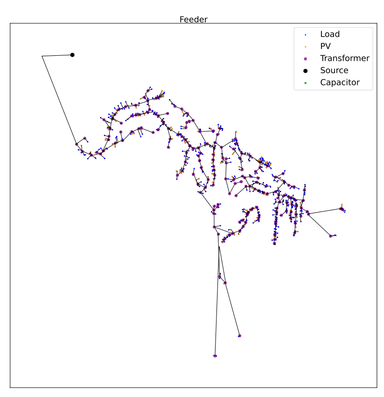{kind=link}
1. Thermal Upgrades
The following figures show the thermal violations in a feeder before and after thermal upgrades:
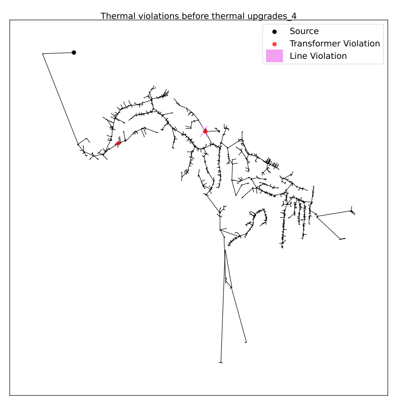 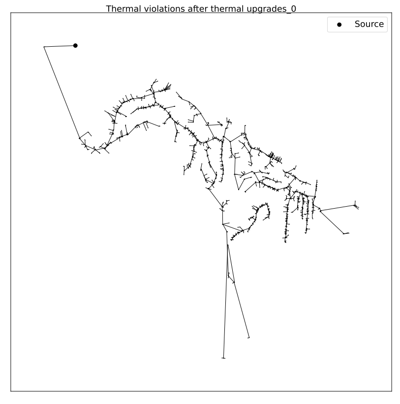{kind=link}
{kind=link}
The following figures show the voltage violations in a feeder before and after thermal upgrades:
 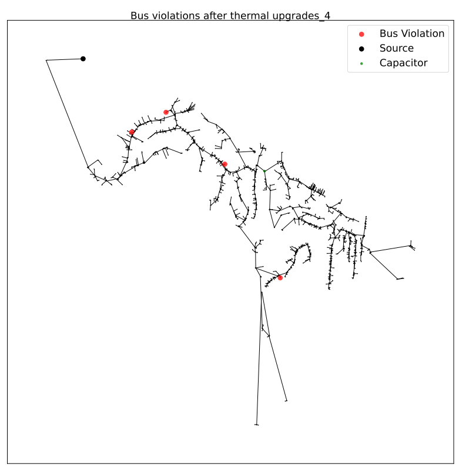
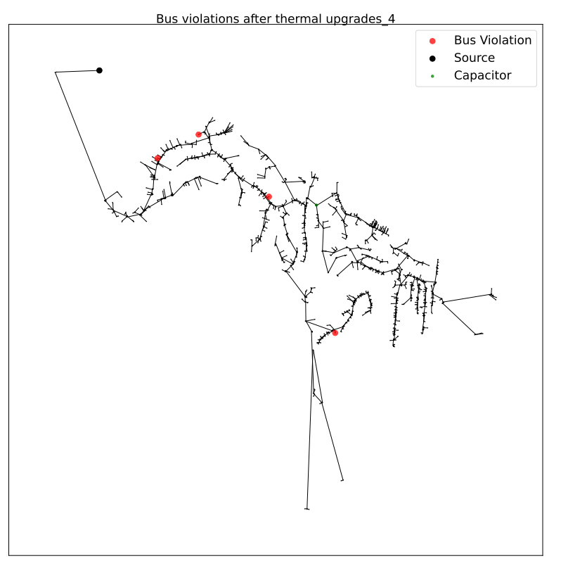
{kind=link}
2. Voltage Upgrades
The following figures show the voltage violations in a feeder before and after voltage upgrades:
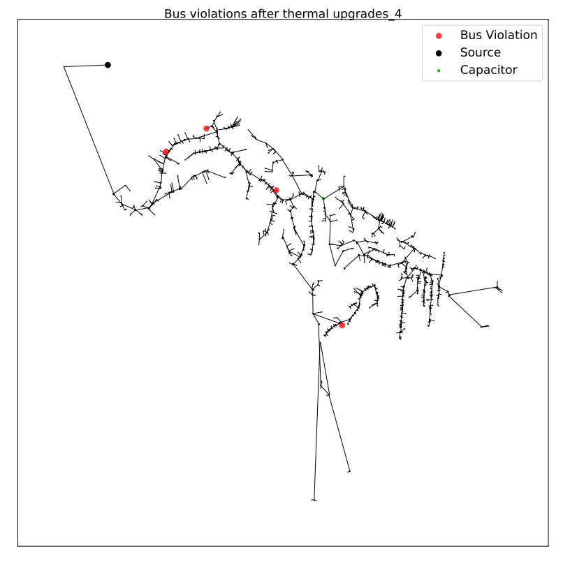 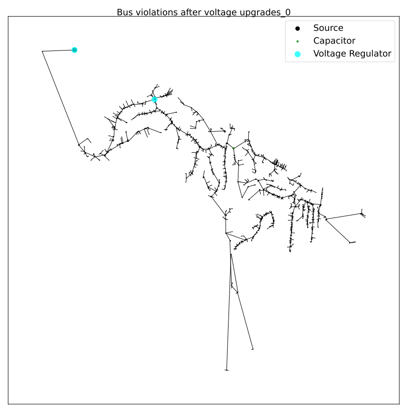{kind=link}
{kind=link}